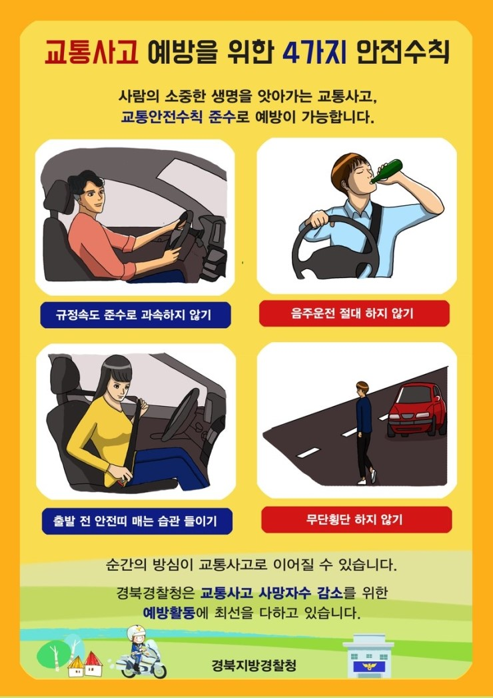

사고 현장
차량이 인도로 돌진한 사고 장면입니다. 도심 보행 공간의 안전 문제를 보여주는 사례입니다.
기사 내용
기사 내용을 불러오는 중입니다...
교통사고 예방수칙

데이터 시각화 보기
아래 버튼을 누르면 17개 시도별 교통사고 현황을 차트와 지도로 확인할 수 있습니다.
도심 교통사고 사례와 지역별 사고 데이터를 함께 살펴봅니다.
차량이 인도로 돌진한 사고 장면입니다. 도심 보행 공간의 안전 문제를 보여주는 사례입니다.

아래 버튼을 누르면 17개 시도별 교통사고 현황을 차트와 지도로 확인할 수 있습니다.